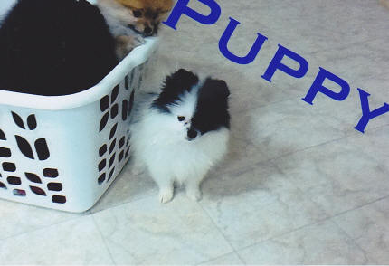

Some of our Pomeranian history:
Adorable puppy basket!
************************************

Kilpatricks Fuzi Chip O'Chris
Kilpatricks Fuzi Chip O'Chris is from the Crescendo lines. Fuzi is the grandfather to most of our puppies. He is a very beautiful, typey Pomeranian. There are many champions in his line and he produces beautiful babies. We have loved having Fuzi in our home. He feels his personal duty is to follow mom wherever she goes and be sure she is o.k.
************************************
Daisy Pom's Shadow Doll
"Dolly"
************************************
"KIT KAT"

************************************
Thunderation
************************************
Beautiful Snow
************************************
ENZO...
************************************
Daisy Pom's King Kronk

************************************
Daisy Pom's Stardust "Dusty"
************************************
DAISY POM'S PRINCESS BUTTERCUP
PRINCESS BUTTERCUP
*****************************************
DAISY
************************************
Merry!
************************************
PETUNIA
************************************
Parti femail "Harlequin"-what a beauty!
************************************
BOOTS
************************************
DOMINOE
************************************
Daisy Pom's Sparkling Cleo
************************************
Dazzling Pearl
************************************
Daisy Pom's Sugar Cookie
************************************
"Donny"
CH. RIDERS DON JUAN
************************************
"We took our puppy to our vet today and she passed all the tests with flying colors - besides winning the hearts of everyone who works there! I believe her good nature and quiet mannerisms are due to the excellent management of your pets - she slept through her first night without a whimper and has started using her papers! What a sweetheart! It was refreshing to meet a quality, knowledgeable breeder who sincerely cares about her animals. I'll give you a 'progress report' one of these days. I think I will name her 'Charmin' - because she is certainly charming!"
-J. R. of Scottsdale
4 years later...
"Charmin turned 4 years old in October and what a fun life she has with us. She has become an avid kayaker and is the 'Captain' of her 'ship'! The kayak does not leave the shore without her! She loves watching ducks, dragonflies and other boaters."
"From time to time people ask us from whom we got her, and marvel at her thick coat. She is such a joy to us and we love her dearly. She minds well, she gets along with our three cats and birds, and is healthy and very intelligent! We can't say enough good things about her, but we are prejudiced!" -J. & L. Scottsdale, AZ
************************************
POMERANIAN HISTORY:
The breed’s name originally came from the historical region of Pomerania (now present day Germany and Poland). Originally weighing nearly 30 pounds, the dog served as an able herder of sheep in its larger form. They were not well known until 1870, when the Kennel Club (England) recognized the so-called Spitz dog. In 1888, Queen Victoria fell in love with a Pomeranian in Florence, Italy, and brought the specimen back to England, influencing its popularity dramatically.
- Toy Group; AKC recognized in 1888.
- Ranging in size from 3 to 7 pounds, with the ideal weight for the show specimen being 4 to 6 pounds.
- Bred down from sled and herding dogs, companion.